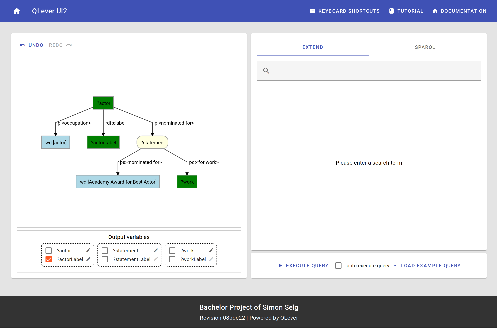

The User Interface enables the user to graphically construct, visualize and execute SPARQL Queries, without knowledge of SPARQL or Wikidata. It is responsive and adapts to different screen sizes.

On the left is the query visulisation. The right side provides the possibility to either extend the query, or to edit the sparql directly.
There are some example queries to give the user some ideas to start with. An undo/redo history for the query exists, so you can redo and undo all query modifications.
The query can be executed using the button on to right bottom. An option exists to trigger execution automatically.
For more details, check the subpages of the different functionalities.
Technical Details
The User Interface is an App written in React.js, using redux for state management and wouter is used for routing. Every view corresponds its own url, meaning the browser forward/back buttons are fully supported.
Queries are parsed using the SPARQL.js library, then converted into a graph which is rendered using dagre-d3.
The app is bundled using webpack, to transpile javascript for older browsers babel is used.
Communication with backend service
The frontend is fully runable on it’s own. Some parts need to communicate with the backend service tho, as it implements some functionalities the UI needs.
These are: Wikidata Identifier Resolving, Wikidata Prefix Search, Wikidata Extension Suggestion and SPARQL Query Execution.